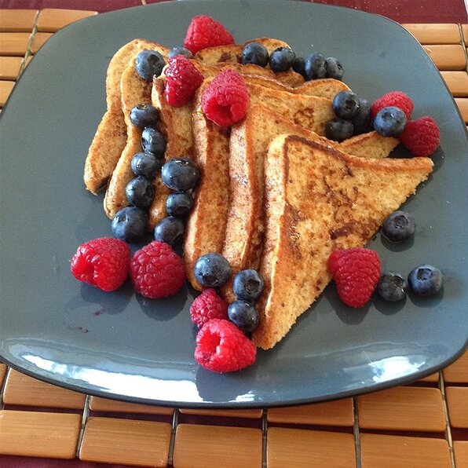

French Toast
\
Description
Nothing easier and simple to start your early morning with some french toast
French toast is a dish made of sliced bread soaked in beaten eggs and typically milk, then pan fried.
Ingredients
- 6 thick slices bread
- 2 eggs
- ⅔ cup milk
- ¼ teaspoon ground cinnamon (Optional)
- ¼ teaspoon ground nutmeg (Optional)
- 1 teaspoon vanilla extract (Optional)
- salt to taste
Directions
- Beat together egg, milk, salt, desired spices and vanilla.
- Heat a lightly oiled griddle or skillet over medium-high heat.
- Dunk each slice of bread in egg mixture, soaking both sides. Place in pan, and cook on both sides until golden. Serve hot.
Back to Recipe List